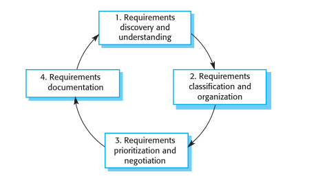

2:Elicitation & Stakeholder Interactions
Lecture 2: Elicitation & Stakeholder Interactions
What is elicitation?
💬 Your first question
You have 30 minutes with a hospital receptionist to figure out what their appointment system should do. What is your first question to them?
Answer
- If your instinct was "what do you want the system to do?" — that's the one question that reliably fails. They will answer in vague generalities or ask for the impossible.
- Better openers get them talking about their work: "Walk me through what happens when a patient calls," "What went wrong yesterday?"
- This gap — between what people know and what they can articulate — is the whole problem this lecture is about.
To elicit is to draw out information from someone — not by asking directly, but through skilled conversation. The term comes from espionage: intelligence officers use elicitation to extract information from a source through seemingly casual conversation, without the source realizing what has been revealed. The best elicitors don't interrogate; they get people talking about what they know.
Requirements elicitation borrows the same idea. Stakeholders have the information we need — how they work, what frustrates them, what they'd change — but they can rarely hand it over on request. Saying "tell me your requirements" fails the same way "tell me your secrets" would. The engineer's job is to understand the work stakeholders do and how a system might support it: the application domain, work activities, desired services and features, required performance, hardware constraints.
Why it is hard:
| Difficulty | What it looks like |
|---|---|
| Stakeholders don't know what they want | Only vague, general terms; unrealistic demands (they don't know what's feasible) |
| Implicit domain knowledge | Requirements expressed in their own jargon, with assumptions left unstated |
| Diverse stakeholders | Different people express requirements in different ways; commonalities and conflicts must be discovered |
| Politics | Managers demand requirements that increase their influence in the organization |
| Dynamic environment | Business context changes during analysis; priorities shift; new stakeholders bring new requirements |
💬 Stakeholders in conflict
Our institute wants a new course-registration system. Name five stakeholders — then find two whose requirements will directly conflict.
Answer
- Students, faculty, academic office, hostel/mess admin, IT support, management…
- Conflicts are everywhere: students want late add/drop, the academic office wants early locks; faculty want small caps, management wants full utilization; students want open elective access, departments want prerequisites enforced.
- Every one of these conflicts must be discovered, then resolved by negotiation — nobody hands you a conflict-free list.
💬 Fixable or permanent?
Look at the five difficulties in the table above. Which can be fixed by a better elicitation process, and which are permanent facts of life you can only manage?
Answer
- Better process helps with: articulation problems (use prototypes, stories), implicit knowledge (use ethnography), diverse expression (use viewpoints).
- Permanent: politics and the changing environment. No technique eliminates them — you manage them with regular stakeholder meetings, negotiation, and iteration.
Dark arts vs occlumency vs legilimency
A Potter-flavored way to remember the stakeholder dynamics:
| Skill | In the books | In requirements engineering |
|---|---|---|
| Legilimency | Extracting what is in another's mind | What the analyst is trying to do: get at knowledge stakeholders can't articulate — the elicitation techniques below are our legilimency |
| Occlumency | Shielding the mind from intrusion | What stakeholders (often unknowingly) do: jargon, "too obvious to mention" knowledge, reluctance to reveal real power structures and politics |
| Dark arts | Manipulation and deception | Political requirements — demands made to increase influence; stakeholders undermining the RE process when they feel unheard. Counter with regular stakeholder meetings and negotiated compromises |
💬 Occlumency in daily life
Explain — in words only — how you unlock your smartphone, to someone who has never used one. Which steps would you skip without noticing?
Answer
- Almost everyone skips: pressing/raising to wake the screen, swiping up first, what to do when the fingerprint fails, the difference between the lock screen and the home screen.
- You skip them because they are second nature — exactly what stakeholders do when describing their work. The librarian never mentions that acquisitions are catalogued before shelving; it "goes without saying."
Elicitation techniques
Elicitation and analysis is an iterative cycle of four activities, with continual feedback between them. The cycle starts with discovery and ends when the requirements document is produced.

| Activity | What happens |
|---|---|
| 1. Discovery & understanding | Interact with stakeholders to discover their requirements; gather domain requirements from stakeholders and documentation |
| 2. Classification & organization | Group related requirements from the unstructured collection into coherent clusters (e.g. by stakeholder viewpoint or by subsystem) |
| 3. Prioritization & negotiation | Multiple stakeholders ⇒ conflicting requirements; prioritize, then resolve conflicts through negotiation and compromise |
| 4. Documentation | Requirements documented (early SRS draft, or informally on wikis/whiteboards) and fed into the next round of the cycle |
At the documentation stage, use simple language and diagrams, in a shared document or wiki accessible to all stakeholders.
Interviews vs Ethnography
Two fundamental approaches: interviewing (talk to people about what they do) and observation/ethnography (watch people doing their job). Use a mix of both.
Interviews may be closed (predefined questions) or open (no fixed agenda); in practice they are a mixture — some questions to get started and keep focus, then less structured exploration.
Being an effective interviewer:
1. Be open-minded — no preconceived ideas; be willing to change your mind if stakeholders surprise you.
2. Prompt with a springboard — a question, a requirements proposal, or a prototype. "Tell me what you want" doesn't work; people talk more easily in a defined context.
Ethnography: an analyst immerses themselves in the working environment, observes day-to-day work, and notes the actual tasks people do. Its value: it discovers implicit requirements reflecting how people actually work rather than the formal processes the organization defines. It is especially effective for:
1. Requirements from actual practice — e.g. air-traffic controllers switching off a conflict-alert system that formal procedure says must be on, because its warnings are distracting.
2. Requirements from cooperation and awareness — e.g. controllers watching adjacent sectors to predict workload, so an automated system should keep that visibility.
Ethnography combines well with prototyping: the ethnography informs the prototype (fewer refinement cycles), and the prototype focuses the ethnography by raising questions to investigate.

| Interviews | Ethnography | |
|---|---|---|
| Good for | Overall understanding of what stakeholders do, how they'd interact with the system, difficulties with current systems | Implicit requirements, actual (not formal) work practice, social/organizational factors |
| Weak at | Domain knowledge (jargon, "too obvious to say"); organizational politics and real power structures | Broader organizational/domain requirements; innovation (it studies existing practice — cf. Nokia's ethnography vs Apple's iPhone) |
| Caveat | People can't visualize a system without a prototype; expect to derive requirements from answers, not receive them | End-user focused; must be combined with other techniques |
💬 Should the system fight back?
Air-traffic controllers switch off the conflict-alert system even though formal procedure says it must stay on. Should the new system prevent them from switching it off?
Answer
- There is no clean answer — that's the point. Locking it on enforces the formal process but ignores why controllers switch it off (false alarms are distracting, possibly dangerous).
- Preventing the workaround without fixing its cause just breeds new workarounds. The ethnographic finding says: fix the alert's sensitivity, don't just enforce the rule.
- Requirements built only from official process documents would have missed this entirely.
💬 When is ethnography wasted?
Ethnography is powerful but expensive. Give a situation where spending weeks observing users would be largely wasted effort.
Answer
- When the goal is innovation rather than supporting existing practice — there is no current work practice to observe for a genuinely new product (Apple didn't study existing phone usage to design the iPhone).
- Also weak for broader organizational or domain requirements — it only sees what end-users do.
Stories vs Scenarios
People are bad at stating requirements but good at describing real-life examples — how they handle particular situations, or things they might do in a new way of working. Stories and scenarios capture this and seed discussion with other stakeholders.
| Story | Scenario | |
|---|---|---|
| Form | Narrative text | Structured description |
| Level | High-level "big picture" of system use | Detailed example of a user interaction session |
| Use | Relatable; can be shared on a wiki for comment from a wide community | Developed from parts of stories; concrete enough to propose requirements |
Example story: "Photo sharing in the classroom" (iLearn) — Jack, a primary-school teacher, runs a class project on the local fishing industry; pupils gather stories on a wiki and need a photo-sharing site where the teacher can moderate content (KidsTakePics).
A full scenario structure:
1. What the system and users expect when the scenario starts (initial assumption)
2. Normal flow of events
3. What can go wrong, and how problems are handled
4. Other activities that may run concurrently
5. System state when the scenario ends
Example scenario: "Uploading photos to KidsTakePics" — user selects photos, project, keywords; system emails the moderator on completion. What can go wrong: no moderator assigned (email school admin, warn user of delay); duplicate filenames (re-upload/rename/cancel). End state: photos uploaded, status "awaiting moderation."
Agile user stories (e.g. in XP) are actually narrative scenarios, not general stories.
💬 Write the failure clauses
Scenario: a student uploads an assignment to the LMS 30 seconds before the deadline. Write the "what can go wrong" section.
Answer
- Upload still in progress when the deadline hits — accepted or rejected? Timestamped at start or end of upload?
- Wrong file attached (last week's assignment, a .tmp file) — is re-submission allowed after the deadline?
- Network drops mid-upload; LMS clock differs from the student's clock; file exceeds the size limit at the worst possible moment.
- Notice how much policy hides in failure handling — most requirements disputes live in these clauses, not in the normal flow.
💬 Same event, three requirements
From the Jack/KidsTakePics story, extract three concrete requirements. Compare with a classmate — do your lists match?
Answer
- Plausible extractions: teacher moderation of uploads before photos are visible; class/teacher account structure; integration with iLearn authentication; upload from mobile devices; a setup service to add third-party tools.
- Lists rarely match — the same story supports many readings. That divergence is exactly why stories must be refined into structured scenarios before they can serve as requirements.
Volere "trawling" approach
The Volere method (Robertson & Robertson) describes elicitation as trawling — dragging a net through the organization to catch requirements. Key ideas:
- Different mesh sizes catch different requirements: a wide net first for the big ones, finer nets on later passes for details.
- No single technique suffices — trawl with a toolkit: apprenticing (sit with the user and learn the work), interviews, workshops, brainstorming, document archaeology (mining existing documents and systems), prototyping, mind maps.
- Expect to iterate: requirements "grow" as understanding improves, and some of what you catch gets thrown back.

💬 Trawling the kirana shop
You are building software for a kirana shop owner who cannot articulate any requirements. Pick two trawling techniques and justify your choice.
Answer
- Strong picks: apprenticing (spend a day behind the counter — the udhaar notebook, the supplier calls, the peak-hour chaos all surface) and document archaeology (the ledger, the khata book, and supplier bills encode the real business rules).
- Interviews alone would fail here for the same reason "tell me what you want" always fails — the owner's expertise is embodied in practice, not in words.
- There is no single right pair; what matters is matching the technique to where the knowledge lives.
References
- Chapter 4, Requirements Engineering, Software Engineering, Ian Sommerville
- Mastering the Requirements Process, Suzanne & James Robertson (Volere)